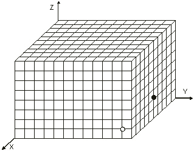
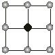

A spider and a bug are inside a glass box with dimensions L, M and
N. They move on the surfaces of the box. They cannot fly and do not
fall, no matter which surface they are on.
Find the strategy
for the spider to catch the bug with minimal number of moves.
Your program
should play a game with the unit computer modules. The game is played in
alternative moves. Your program simulates the movement of the spider, and the
unit computer module responds with bug moves.
L,M,N £ 10000 are positive integers denoting the box dimensions in
centimeters.
The first line of the input consists of three integers L, M and N.
The second line consists of three integers xs, ys, zs representing the spider's
starting position. The last line consists of three integers xb, yb,
zb
representing the bug's starting position.
Output file SPIDER.OUT
The call to the procedure Finish
produces an output file. This file should not be
modified by your program. The file will contain the number of moves, if the
task is solved or the reason why your program failed.
The test run is not awarded with points if
there are:
Let T be the minimal number of spider
moves required to catch the bug and let S be the number of spider moves
produced by your program.
If S < T+3 then the test run
is awarded with 10 points.
If T+3 £ S < 1.2*T then the test run is awarded
with 8 points.
If 1.2*T £ S < 1.4*T then the test run is awarded
with 5 points.
Instructions for
PASCAL programmers
You will have a unit called USpider.tpu.
At the beginning of your program you should set the following instruction:
uses USpider;
This unit contains 4 procedures: Init; MoveSpider, Movebug and Finish.
Procedure
Init;
The
procedure Init should be called at the beginning of the program.
Procedure
MoveSpider(xns, yns, zns : integer);
The
procedure MoveSpider is used to set new coordinates of the spider move.
Procedure
MoveBug(var xnb, ynb, znb: integer);
The
procedure MoveBug implements the computer strategy and returns new
coordinates of the bug move.
Procedure
Finish;
The
procedure Finish should be called when the spider catches the bug. This
procedure halts your program.
At the beginning your program must call
procedure Init. Then your program should alternatively call MoveSpider
and MoveBug. When you call the procedure MoveSpider that sets the
coordinates of the spider at the position of the bug then you call procedure Finish.
Instructions for
C programmers
You will be provided with an object file USpider.obj
and a header file USpider.h.
Before solving the task, you should open a new
project. The project should be called Spider.prj and should contain two
files: the USpider.obj and your code file. At the beginning of your code
file, you should set the following instruction:
#include "USpider.h" or #include <Uspider.h>
This obj file contains 4 functions: Init, movespider,movebug and Finish.
void
Init(); The function Init should be called
at the beginning of the program.
void
movespider(int xns, int yns, int zns); The function movespider
is used to set new coordinates of the spider move.
void
movebug(int *xnb, int *ynb ,int *znb); The function movebug
implements the computer strategy and returns new coordinates of the bug move.
void
Finish(); The
function Finish should be called the when the spider catches the bug.
This function halts your program.
At the beginning your program must call
function Init. Then your program should alternatively call movespider
and movebug. When you call the function movespider that sets the
coordinates of the spider at the position of the bug then you call function Finish.
Spider Figure 1:
Box surfaces

Spider Figure 2:
Spider moves
Spider Figure 3:
Bug moves

SPIDER.IN
|
Your Program interface with unit
|
Bug coordinates returned
|
|
10 12 8 10 11 1 5 12 2 |
Init; movespider(9,12,2); movebug(xb, yb,
zb); movespider(7,12,1); movebug(xb, yb,
zb); movespider(5,12,0); movebug(xb, yb,
zb); movespider(3,11,0); movebug(xb, yb,
zb); movespider(1,10,0); Finish; |
(4,
12, 1) (3, 12, 0) (2, 11, 0) (1, 10, 0) |
In this example the minimal possible number of moves is 5.
Test
data (zip, 2K)